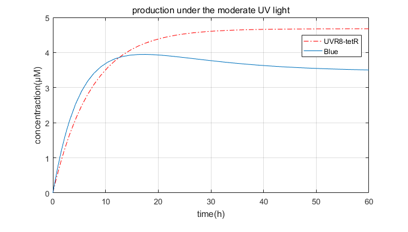

Validation experiment
Confirmation
After we constructed two plasmids, Escherichia coli DH5αwas transformed with plasmids and positive clones were identified by colony polymerase chain reaction (PCR) and restriction endonuclease digestion. Photo.1 and 2 shows the confirmation result. Further confirmations were finished by sequencing.
Photo 1. After cultivated for about 18 hours, the positive clone turned into blue.

Photo 2. The Colony PCR showed the result of Transformation.
Simulation
We got the models in our software. Also, we had a model using Matlab. Picture.1 and 2 show the result.

Picture 1. Our software’s simulation of AmilCP

Picture 2. Matlab’s simulation of AmilCP
Experimental data
After the sequencing confirmation, Escherichia coli strain BL21 (DE3) was transformed with plasmids. We didn’t have Liquid culture systems with UV light, so we used plate cultivation. We placed the dish on a 10-15W weak intensity UV lamp at a distance of about 30 cm, and got samples every few hours. 22 hours later, we got the blue bacteria moss (Photo.3 ). The bacteria was been broken by ultrasonic crusher, and then we use the OD588 to measure the concentration of the blue protein (Photo. 4). But unfortunately, collecting bacteria from plate may cause some system error, and because of this, our data of OD588 had poor sample reproducibility. Hence, we decided to collaborate with SCUT-China_A, , and used their data to validate our simulation.
Photo 3. One of the plates after exposed in UV for 22 hours.
Photo 4. The mixture of bacteria after broken by ultrasonic crusher.